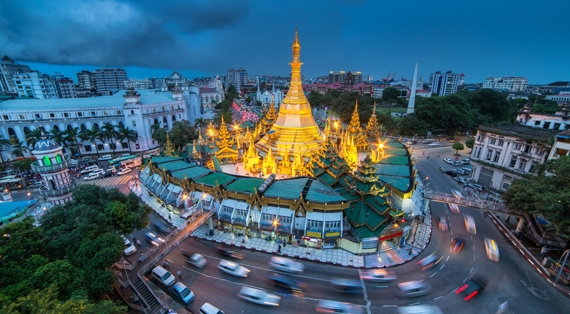
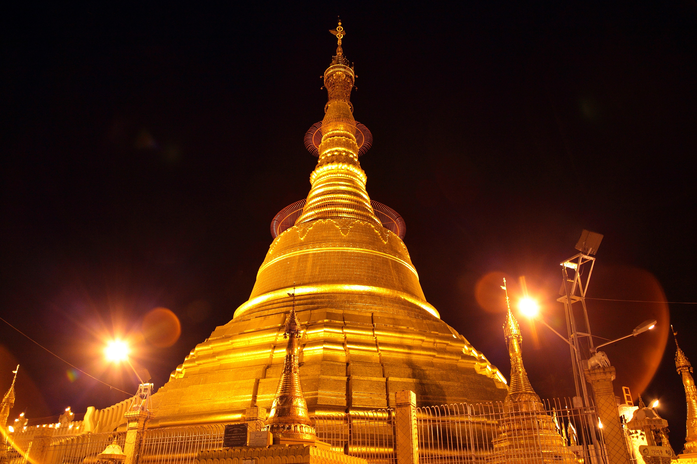
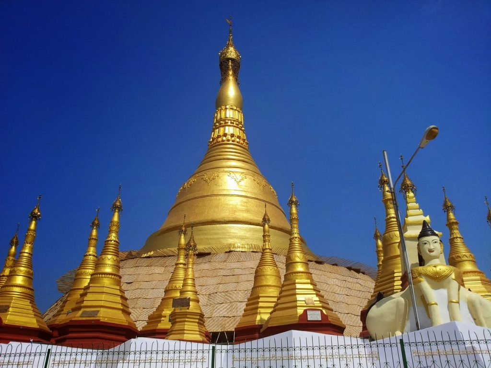
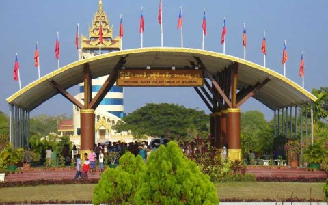
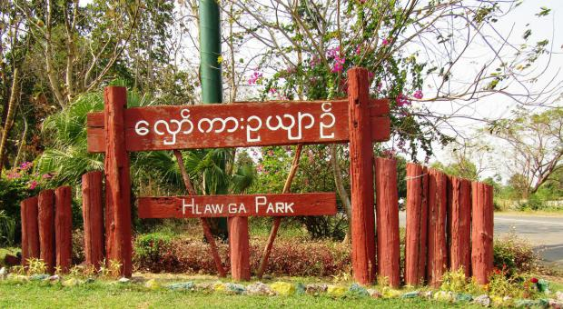

Yangon is a region of importance nestled on the south-central part of Myanmar. Yangon is the capital of the Yangon region and the erstwhile capital of Myanmar.It is also the current commercial capital of the country as well as Yangon’s largest city. The city houses a large number of colonial-era buildings in Southeast Asia and has a unique colonial-era urban core that has been maintained over the years. The area around the Sule Pagoda is more than 2000 years old and is the commercial core of the city.
Popular Places
Shwe Dagon Pagoda
Sublimely iconic, and revered locally as the most important place of worship, Shwedagon Pagoda is inspiring to all.Often called the Great Dragon Pagoda and the Golden Pagoda, this 326-foot tall pagoda is located to the west of the Kandawgyi Lake. A visit before the sunset is highly recommended to capture the beautiful view.
Sule Pagoda
Sule Pagoda is a Burmese stupa located at the heart of Yangon and is an important place for contemporary Myanmarese politics, ideology and geography. Legends tell that Sule Pagoda was built before the Shwedagon Pagoda, during the time of Buddha and is more than 2600 years old. It is a part of the Yangon City Heritage List.


Bo Ta Htaung Pagoda
This is a famous pagoda located in downtown Yangon, near the Yangon river. It was built by the Mon around the same time as the Shwedagon Pagoda and is believed to be 2500 years old. The pagoda is hollow within and houses the sacred hair of Gautama Buddha. The pagoda was completely destroyed during World War II but later rebuilt.

Kyaik Khauk Pagoda
Thanlyin is a major port city of Myanmar, located across the Bago River from Yangon. The main tourist attraction in Thanlyin itself is Kyaik Khauk Pagoda. Built 2000 years ago, this pagoda has four stairways and resembles a Mon-style stupa. Thanlyin also has the ruins of a Portuguese Church built around 1750.
National Races Village
The National Races Village is situated in a lush park near Thanlyin Bridge. It has miniaturised landmarks from around the country, a playground, a lake, a crocodile farm and a bird sanctuary. Tourists can feel and experience every state of Myanmar here. Each state of Myanmar is represented here with a garden and a landmark building of that state.


Hlawga National Park
Hlawga National Park is a 1,540-acre nature reserve with a museum of replica traditional Myanmar buildings, a 62-acre zoo with a rock garden and a lake just 25km from Yangon. It was first established as an environmental education centre in 1982. It is a popular day trip destination for tourists.